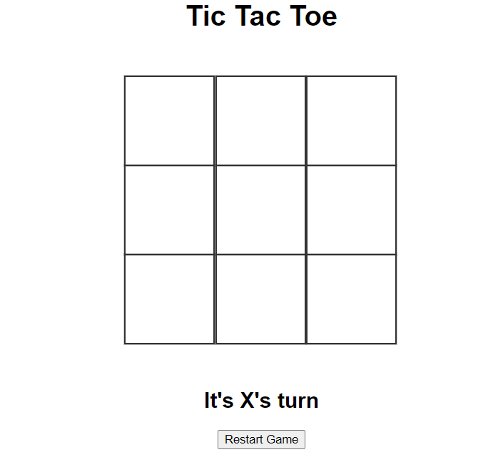
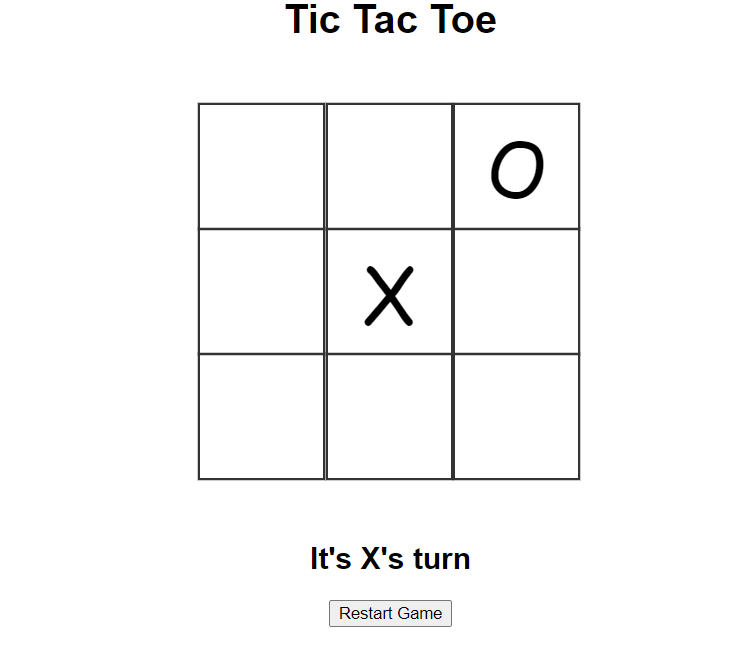

Tutorial
(reword later)
The goal of Tic Tac Toe is to put three of your selected marker (X or O) in a row before your opponent.
The game starts with an empty board with a choice of single-player, or multi-player

If single player is selected-
If multiplayer is selected-
The first player to go will be X. Use the mouse to click on an empty box on the game board.

Once pressed, the X will be placed and mouse control goes to Player 2. Repeat this sequence until X/O wins, or until the game reaches
a tie.
You, Player 1, have the choice to play Tic-Tac-Toe against a Player 2, either the computer or a friend. (fix placement)